Agent Harness Anatomy #4: Goose — the MCP-native agent that asks a judge
Series: Agent Harness Anatomy — top-down dissections of real agent harnesses, grounded in verifiable source code. Every behavioral claim below carries a footnote to a pinned GitHub permalink; the full evidence lives in the endnotes.
Version block
- Repo: block/goose
- Pinned: tag
v1.53.0→76da81cb964b21cd096db739302329b40c2998b8(2026-09-30) - Language: Rust (cargo workspace) + Electron desktop
- License: Apache-2.0
- Claim under test: "your native open source AI agent — desktop app, CLI, and API — for code, workflows, and everything in between"
- Scope: this teardown covers the CLI agent (
crates/goose-cli+crates/goose), the series' MCP-native axis. The Electron desktop (ui/desktop/) is noted where it hosts the cron loop;goose-roaming(P2P transport) was mapped but not deep-dived.1
| Crate | Non-test .rs |
Role |
|---|---|---|
goose |
339 files, 176,482 LOC | THE product crate: agent, extensions, session, config, gateway |
goose-cli |
51 files, 28,625 LOC | CLI binary, session REPL, recipes, commands |
goose-provider-types |
36 files, 30,822 LOC | Conversation/message types, Provider trait, canonical model registry |
goose-providers |
26 files, 15,731 LOC | Provider implementations (34 static + 48 declarative JSON) |
goose-local-inference |
20 files, 10,347 LOC | On-device inference (llama.cpp/GGUF + MLX) |
goose-mcp |
11 files, 6,084 LOC | MCP client crate + 4 bundled MCP servers |
goose-agent |
6 files, 1,557 LOC | Generic state-machine (the NEW loop's skeleton) |
goose-context-management |
7 files, 1,156 LOC | Language-agnostic compaction library |
goose-sdk |
4 files, 2,834 LOC | Provider decision/bindings (uniffi for Python/Kotlin) |
goose-roaming |
11 files, 2,197 LOC | P2P roaming transport (iroh-based; mapped, not deep-dived) |
Entry is the CLI binary at crates/goose-cli/src/main.rs →
goose_cli::cli::cli(); the agent loop lives at
crates/goose/src/agents/agent.rs (Agent::reply).1
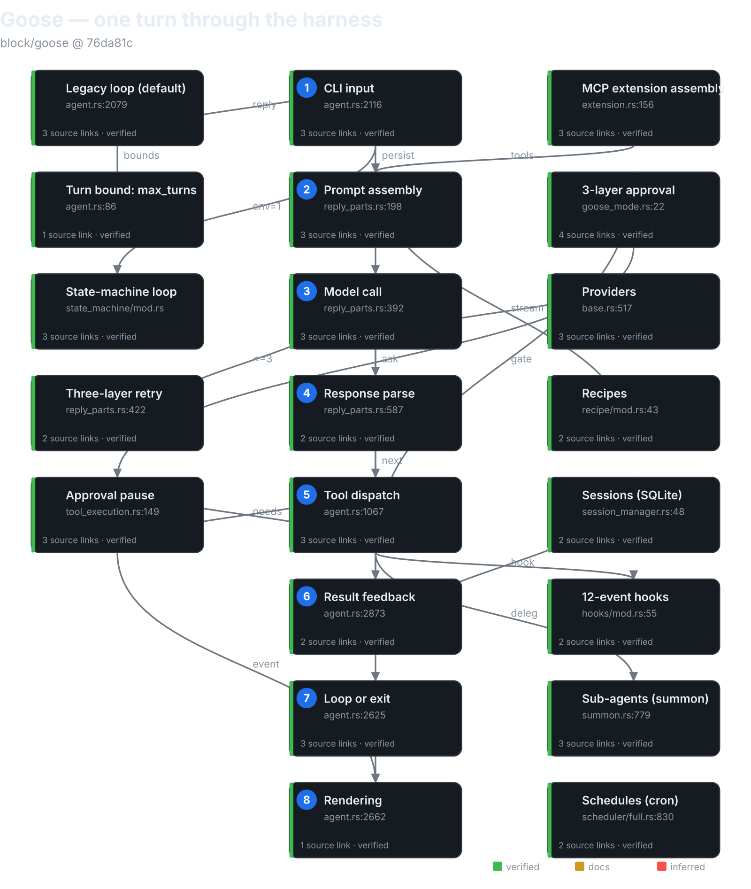
The mental model
Goose is an MCP-native, approval-gated agent runtime in Rust — and it
is mid-migration between two agent loops. Every tool the agent sees,
built-in or third-party, arrives through the MCP client layer: "builtin"
means in-process MCP over a tokio duplex, not a function call. There is
no non-MCP tool path at all.2 The loop the CLI runs by default is a
6,382-line legacy agent.rs6; the opt-in replacement is an effect-sourced
state machine enabled by GOOSE_STATE_MACHINE=1 — and the repo's own
AGENTS.md documents the parity burden plainly: "Until the migration is
complete, changes to agent-loop behavior must be implemented and tested in
both paths."3
Three inversions against the series so far. Against pi: where pi has 4
built-in tools and a TypeScript extension API, goose's entire toolset is
assembled per-session from extension configs — the tool system is the
extension system. Against aider: where aider negotiates with the model
through text edit formats and remembers via git, goose speaks native tool
calls and remembers via SQLite — but keeps aider's model-awareness
philosophy, with an 8,160-entry model catalog zstd-bundled at build time
plus substring heuristics.4 Against Cline: where Cline's approval model
is user-driven policy plus diff previews, goose adds a second adaptive
layer — an LLM judge that classifies tool calls as read-only, labeled
UNTRUSTED TOOL REQUEST DATA, failing closed.5
The governing tradeoff: goose pays Rust-scale engineering (two loops, five inspectors, four extension transports) for a harness where the tool contract is a protocol (MCP), not an API. If you're building a harness, that's goose's thesis in one sentence: make everything a server, and the agent becomes a client of its own capabilities.
Package map
A layered cargo workspace, dependency direction running strictly downward:1
goose-provider-types Provider trait, Message/Conversation, canonical registry
↑
goose-providers 34 static + 48 declarative provider impls
goose-mcp MCP client + 4 bundled servers
goose-agent generic StateMachine: Operation/Inference/Step traits
goose-context-management compaction library (summarize, token estimation)
↑
goose Agent, extensions, sessions, recipes, scheduler, gateway, hooks
↑
goose-cli REPL session, commands, recipes CLI, schedule CLI
crates/goose/src key dirs: agents/ (the loop + extensions + platform
tools), session/ (SQLite session manager), recipe/, scheduler/,
gateway/ (Telegram), hooks/, config/ (config.yaml,
permission.yaml), context_mgmt/, permission/ (inspectors),
providers/ (registry, OAuth, inventory), conversation/ (message types).
The core loop
Two loops; a migration in progress. Agent::reply()
(agent.rs:2079) takes a use_state_machine: bool; the CLI passes
goose::agents::state_machine::enabled(), which is false unless
GOOSE_STATE_MACHINE is one of 1, true, TRUE, yes — so the
default is the legacy loop.3
The legacy loop (default)
Agent::reply → reply_impl (preamble: elicitation interception,
state-machine dispatch, empty-message short-circuit, SessionStart /
UserPromptSubmit hooks, slash commands, final-output pre-check,
auto-compaction gate) → reply_internal, which runs a plain loop {}
inside an async_stream::try_stream!:6
loop {
if is_token_cancelled(&cancel_token) {
break;
}
if can_drain_pending_steers {
for message in self.drain_pending_steers(&session_config.id).await {
A "turn" is one provider round-trip plus tool-drain; turns_taken
increments per iteration except after empty-turn retries and stop-hook
denials, which don't consume budget. Termination: max_turns (recipe →
GOOSE_MAX_TURNS → 1000, DEFAULT_MAX_TURNS: u32 = 1000) yields
MAX_TURNS_MESSAGE and breaks; cancellation (three check points);
provider refusal; credits/auth/network errors; at most 2 recovery
compactions; at most 3 empty-turn retries; a stop-hook denial cap of 8;
recipe retry exhaustion.7 There is no max_iterations symbol anywhere
in the agent or CLI crates — the bound is max_turns, full stop.7
Confirmation plugs in mid-turn. inspect_tools splits requests into
approved / needs_approval / denied; for the middle group,
handle_approval_tool_requests registers a oneshot in the
ToolConfirmationRouter, yields an ActionRequired event, and awaits
— the loop genuinely pauses mid-iteration until
submit_tool_confirmation delivers the verdict.8 (handle_confirmation
is dead — zero non-test callers, superseded by submit_tool_confirmation.
Providers can also route confirmation natively through the protocol via
PermissionRouting::ActionRequired.)8
Retry is three layers: (a) provider pre-first-item retry (≤3, exponential
backoff 1s→30s, transient-only; auth errors get one credential refresh;
mid-stream errors are not retried); (b) recipe RetryManager (shell
success checks, an on_failure command, conversation reset to the
initial_messages snapshot); (c) micro-retries — empty-turn ×3,
compaction ×2, stop-hook ×8. Tool failures arrive as error ToolResponse
content, not exceptions.9 And one guard is theater: the
RepetitionInspector doom-loop guard is registered with None, so
check_tool_call always returns true, and inspect runs on throwaway
clones. The doom-loop protection readers expect is actually just
max_turns.9
The state-machine loop (opt-in)
Effect-sourced: every step produces GooseEffects applied to the
persisted session by the SessionManager — the machine re-loads the
session each iteration, "an ordered, re-entrant pipeline over persisted
conversation state."10 The step order is fixed, and the LLM call is
dead last:
EntryHookOperation→ 2.SlashCommandOperation→ 3.SteerOperation→ 4.MaxTurnsOperation→ 5.BangShellOperation→ 6.CompactionOperation(skipped if the providermanages_own_context) → 7.ToolPairCompactionOperation→ 8.ToolApprovalOperation→ 9.DoctorOperation→ 10.ProjectOperation→ 11.SkillOperation→ 12.RecipeOperation→ 13.ToolExecutionOperation→ 14.UnknownToolOperation→ 15.RetryOperation→ 16.StopHookOperation→ 17.ExitOnErrorOperation→ 18.Inference— which gathersinference_tools,prompt_parts, andmoim_partsfrom every operation before calling the model.10
Approval here is modeled as conversation effects: a goose.executable
boolean patched onto tool-request metadata. Two seams worth naming: the
legacy loop imports the new path's MAX_TURNS_MESSAGE (the old giant
leans on the new skeleton), and Permission::Cancel is normalized to
DenyOnce only in the state-machine path — approval is enforced twice,
differently, per the migration's parity burden.11 One more: the steer
queue can veto the loop's exit but cannot inject a steer before the first
provider round-trip.12
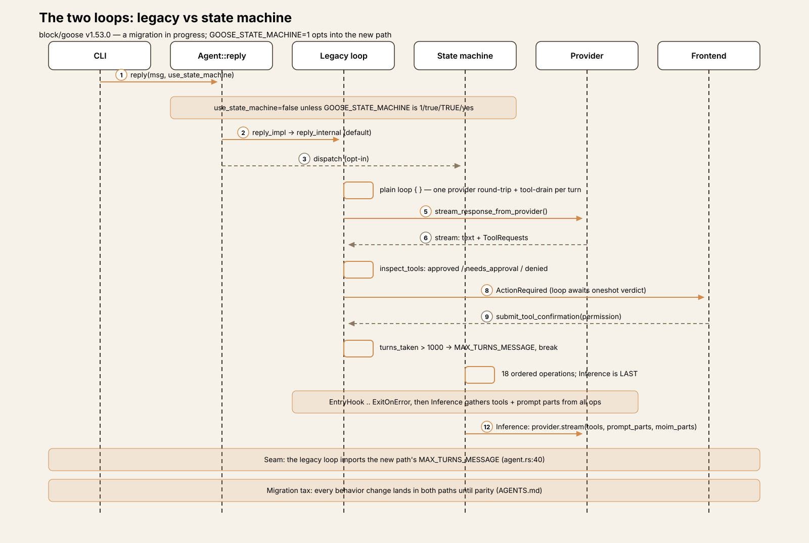
One turn, end to end
Trace: the user types list the files in src/ and summarize what this
project does in the CLI, Auto mode, default extensions.
① Input. Agent::reply assigns a message ID; reply_impl finds no
elicitation content; use_state_machine=false skips the new path;
SessionStart / UserPromptSubmit hooks fire; execute_command returns
Ok(None) — not a slash command; the message is persisted via
session_manager.add_message.13
② Prompt assembly. reply_internal → prepare_reply_context →
prepare_tools_and_prompt: tools are collected via list_tools from the
extension manager (including MCP servers), names are enforced unique, and
the system prompt is built with PromptManager from extension info plus
directory hints plus the goose mode. Toolshim vs native tools are split
per model_config.toolshim. A moim turn-context message (time, working
dir, compaction status, turn budget) is persisted as an agent-only user
message before the loop — skipped when the context limit is under 32k.14
③ Model call. Loop iteration 1: turns_taken → 1; 1 > 1000 is false.
stream_response_from_provider → provider.stream(&model_config,
system_prompt, messages, &tools) — streaming, with pre-first-item
transient retries (≤3) on rate-limit/5xx/network. Text chunks yield
AgentEvent::Message live.15
④ Response parse. categorize_tool_requests extracts the model's
ToolRequests (say, a developer__shell call), canonicalizes
model-mangled names (recover_mangled_tool_name), coerces arguments to
the advertised JSON schema, and dedupes tool-call IDs. Calls to
unadvertised tools become invalid_request errors — invalid tool calls
are data, not exceptions.16
⑤ Tool dispatch. inspect_tools plus the permission split: a read-only
ls lands in approved → dispatch_tool_call → PreToolUse hooks fire
→ extension_manager.dispatch_tool_call runs it → with_post_tool_hook
wraps it (large-response spill + PostToolUse hooks). A mutating call
would instead hit handle_approval_tool_requests: a oneshot registered,
an ActionRequired event yielded, the loop paused until
submit_tool_confirmation delivers the verdict. Streams drain
concurrently.17
⑥ Result feedback. Tool outputs attach as ToolResponse blocks on
user-role messages; request/response pairs go into messages_to_add,
persisted per message and appended to the conversation. Thinking blocks
ride on the first tool-call carrier message; unparseable calls become a
well-formed "unparseable_tool_call" placeholder so strict providers
never see malformed history. Large text outputs spill to an owner-only
temp file (200,000-char default) before feedback.18
⑦ Loop or exit. Iteration 2: the model answers in text with no further
tool calls → exit_chat = true; the stop hook allows → break.
Otherwise the loop continues until turns_taken > 1000, cancellation, an
error arm, or the stop-hook cap.19
⑧ Rendering. Nothing is printed by the loop itself — all output is
AgentEvents (streamed text, ActionRequired prompts, Usage updates)
consumed by the CLI, the desktop, and the ACP frontends. Final summary
text accumulates in last_assistant_text.20
Subsystem inventory
- MCP + extensions (the signature subsystem). Configuration is
ExtensionConfig, exactly four variants —stdio,builtin,platform,streamable_http. No SSE: leftoversseconfigs only emit a migrate-warning.21 They live underextensions:in~/.config/goose/config.yaml(GOOSE_PATH_ROOToverrides the root). Session startup resolves extensions for the new session, thenAgent::add_extensions_bulk→ExtensionManager::add_extension(no-op on unchanged config), resolving secrets and envs against a 31-key env denylist, then connecting per type: stdio spawns a subprocess (with an OSV malware check on npx/uvx invocations), builtin servers connect over in-process tokio duplex, platform extensions run in-process via the client factory, remote ones get an OAuth step-up wrapper with proactive token refresh.22
Tools are listed per client and namespaced <ext>__<tool> (unprefixed
only for first-class platform tools), owner-tagged in
_meta.goose_extension — the __ prefix is a display name; true
ownership is the _meta tag — cached with version invalidation on
tools/list_changed, and dispatched back to the owning client by
resolve_tool_with_constraints (with mangled-name recovery for
developer.shell / functions.*).23 The bundled set in goose-mcp:
autovisualiser (8 render_* tools), computercontroller (xlsx/docx/pdf
plus a macOS-only computer_control), memory (4 tools), tutorial (1
tool). Platform extensions: developer, summon, skills, analyze, tom,
extensionmanager, apps, and scheduler default ON; todo, chatrecall,
summarize, code_execution, and orchestrator default OFF (scheduler and
orchestrator hidden).23
Discovery is where the docs overreach. servers.json still exists but
is consumed only by the docs website — no runtime consumer. The
repo's AGENTS.md refuses new directory entries pending migration to the
official MCP Registry, and no registry client exists in code.
search_available_extensions is config-local only.24 Permissions are
keyed on prefixed tool names; ToolInfo.permission is dead code
(defined once, referenced nowhere else); manage_extensions always
requires approval and is blocked for subagents; an available_tools
allowlist is enforced at list and dispatch time; removing an extension
strips its per-tool permissions. There is no manifest permission model —
restriction is host-side.25
The protocol layer: rmcp 3.4.1 is the protocol SDK; goose-mcp adds the
four bundled servers, the spawn-function registry, and subprocess/PATH
plumbing; the goose crate's GooseClient adds roots, elicitation
(300s timeout, routed to the user), session-context _meta injection,
and timeouts/cancellation.26 And the docs diverge in four places
worth naming: extensions-design.md documents a fictional Extension
trait (zero occurrences in code); docs say goose mcp {name} adds a
builtin to a session — it runs the server standalone on stdio; docs name
an enable_extension tool — the real tool is manage_extensions;
"Smart Extension Recommendation" is just a local config listing.27
Contrast the series: Cline wraps MCP servers as native server__tool
AgentTools with per-server config; goose inverts it — everything is
an MCP server, including builtins, and the agent's entire toolset is
extension config. pi has 4 built-ins plus a TS extension API; goose has
no non-MCP tool path at all.2
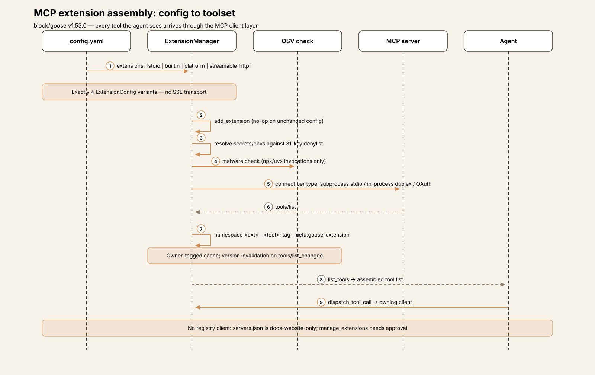
- The approval model. Three cooperating layers:
1. Modes. GooseMode ∈ {Auto, Approve, SmartApprove, Chat},
default Auto (GOOSE_MODE config key; /mode switches mid-session).
Auto approves, Approve asks on everything, SmartApprove asks only for
sensitive calls, Chat runs no tools at all.29
2. Permission levels. PermissionLevel ∈ {AlwaysAllow, AskBefore,
NeverAllow} per tool, persisted in <config_dir>/permission.yaml
under user: and smart_approve: namespaces; lookup precedence is
NeverAllow > AlwaysAllow > AskBefore, keyed by full tool name —
removing an extension prunes its entries.30
3. The inspector chain. Registered in Agent::new in order:
Security (malicious patterns), Egress (exfiltration destinations),
Adversary (user-defined adversary.md, model-reviewed), Permission
(the mode/permission decision table), Repetition (the inert doom-loop
guard). Each emits InspectionAction ∈ {Allow, Deny, RequireApproval}.
Security can only escalate, never relax: a Deny removes the request
from approved and needs-approval; an Allow is explicitly a no-op on
other inspectors' decisions — "don't override other inspectors'
decisions."31
SmartApprove's core is an LLM judge. For tools with no cached
verdict, goose asks the model itself whether each pending tool call is
read-only — the requests are labeled UNTRUSTED TOOL REQUEST DATA and
sent through a synthetic platform__tool_by_tool_permission tool.
Non-read-only verdicts are cached name-wide as AskBefore in the
smart_approve: namespace; judge failure fails closed (everything
prompts). The code acknowledges the fox-guarding-henhouse shape with
prompt-injection tests in-tree.32
The user prompt offers Allow / Always Allow / Deny / Cancel — but
"Always Allow" is withheld when a security inspector attached a
warning. AlwaysDeny is never offered in the CLI; its only producer
is the Telegram gateway's "deny always" reply. And headless is strict:
Auto auto-allows (with a warn log), but Approve/SmartApprove in
non-interactive mode is a hard error — "This is an invalid
configuration."33
Series comparison: GooseMode ≈ Cline's plan/act modes; per-tool
permission.yaml ≈ Cline's per-tool allow-list — but the LLM judge
plus the security inspectors are a second adaptive layer Cline doesn't
have. Against aider: there is no git-undo safety net at all (verified
negative) — safety is approval-gating plus inspectors. Against pi: the
analogue of beforeToolCall is HookEvent::PreToolUse (exit code 2 or
{"decision":"block"}), evaluated before dispatch in both loops — but
plugin-loaded shell commands, not a user hook function.2833
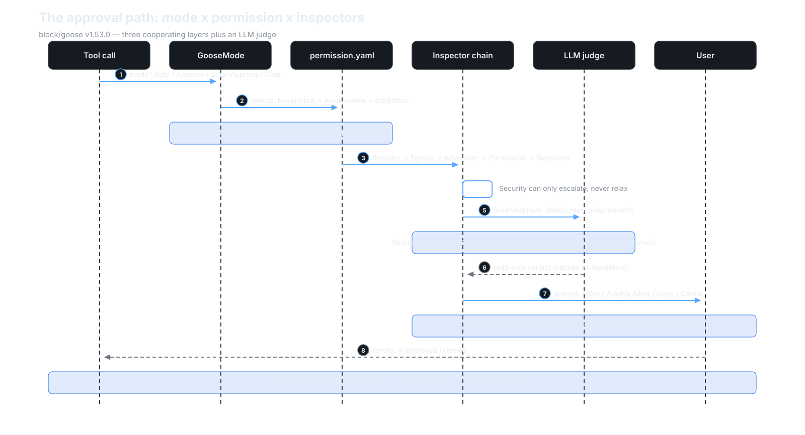
- Providers. The
Providertrait has exactly one required behavioral method:stream().complete()defaults to stream-plus-collect; only one provider in-tree overrides it. There is a singleProvidertrait — grep confirms it.34 The inventory: 34 static registrations (including feature-gatedaws_bedrock,sagemaker_tgi,local), 48 bundled declarative JSON definitions, and user custom providers from~/.config/goose/custom_providers/— four tiers (Preferred, Builtin, Declarative, Custom), with a selection chain from--providerflag through saved session, recipe,GOOSE_PROVIDERenv, and config.35
The model catalog is goose's aider-YAML analog at scale: an
8,160-entry models.dev snapshot zstd-bundled at build time, with a
background ETag refresh that hot-swaps the registry at runtime. Name
resolution is goose's substring-heuristics layer — version-suffix
stripping, provider renames, Claude word-order swapping,
infer_provider_from_model substring rules — plus hardcoded
inferred_thinking_mode for Claude 4.5–5.x and name-regex matchers for
reasoning models. No model-name validation exists anywhere on the
GOOSE_MODEL path; and there is no aider-style hand-written YAML.36
Auth is env-var-first-then-keyring, with no mixing; four auth methods
(NoAuth, BearerToken, ApiKey, Custom); OAuth via
configure_oauth in six providers with a shared RFC 8628 device-flow
helper; command-based auth for custom providers. One naming seam:
crates/goose/src/oauth/ is MCP-server OAuth, not provider auth —
provider OAuth lives under providers/oauth*.rs.37
goose-local-inference puts llama.cpp/GGUF and MLX on-device inference
behind provider name "local" — feature-gated, never default, no
auto-activation, with its own tool-emulation (toolshim) and chat
templates.38
Message types deserve a line: MessageContentBlock carries
Thinking/RedactedThinking blocks (signature-aware stream coalescing);
ToolRequest wraps rmcp::model::CallToolRequestParams, so invalid
tool calls are data, not errors; harness annotations ride in
tool_meta._meta; approval and elicitation are modeled as conversation
blocks. Cost is estimated, never authoritative unless provider-reported.39
Philosophy: aider's (big model catalog + heuristics) with per-provider implementations — but unlike Cline's one generic AI-SDK adapter, goose hand-writes 34 provider impls and adds a declarative JSON tier for the long tail.4
-
Sessions. SQLite (
<data_dir>/sessions/sessions.db), messages as JSON blobs. The session record carries the id, working dir, an LLM-generated name, the session type, timestamps, extension data, usage/accumulated cost, the schedule id, the fullRecipestruct persisted on the session, user recipe values, the conversation, the goose mode, the parent session id, and the provider/model.SessionTypespansUser | Scheduled | SubAgent | Hidden | Terminal | Gateway | Acp— resume lists onlyUser. Resume viagoose session --resume(by name or id, or the most recentUsersession);--forkcopies messages into a new session. Cross-session recall is explicit — achatrecallplatform tool plus SQL full-text search — never automatic. Every message carriesuser_visible/agent_visibleflags, which compaction and subagent summaries exploit.40 -
Context management: compaction, not budgeting. There is no token-budget allocator — the negative grep is clean. Auto-compaction triggers when
session.usage.total_tokens / context_limit > 0.8(overridable viaGOOSE_AUTO_COMPACT_THRESHOLD; ≤0 or ≥1 disables it; providers thatmanages_own_contextskip it). The numerator prefers session metadata and falls back to a token-counter estimate — the code labels the source ("session metadata" vs "estimated"). The check runs before each reply in both loops;/compacttriggers it manually.compact_messagesruns one-shot model summarization, marks all original messages agent-invisible (kept user-visible for the UI), appends one agent-only summary plus a continuation nudge, preserves the latest user text, and persists viareplace_conversationplus aHistoryReplacedevent. An opt-in tool-pair summarization (default off) replaces the oldest 10 tool request/response pairs past a computed cutoff with per-pair summaries. Thegoose-context-managementcrate is a language-agnostic compaction library — and it is wrapped for Python/Kotlin throughgoose-sdk's uniffi bindings.41 -
Hooks. Plugin-loaded lifecycle hooks: 12 events (
PreToolUse,PreToolUseResult,PostToolUse,PostToolUseFailure,SessionStart,SessionEnd,UserPromptSubmit,BeforeReadFile,AfterFileEdit,BeforeShellExecution,AfterShellExecution,Stop). Each enabled plugin contributes ahooks/hooks.json; onlycommandactions are supported; the hook runs as a shell command with JSON-serializedHookContexton stdin and a 30-second default timeout. Blocking semantics: exit code 2 or{"decision":"block"}; first denial wins.PreToolUseruns before dispatch in both loops — goose's analogue of pi'sbeforeToolCall, but plugin-loaded shell commands rather than a user hook function. Hook errors never crash the host. Event-name casing is verified against a real shipped example: PascalCase, matching theHookEventnames exactly.42 One aspirational seam: the config module doc comment advertises "hot reloading of configuration changes," but there is no file watcher and no reload function anywhere in the config crate — the claim exists only in the comment.42 -
Schedules. In-process cron, not a daemon: a
Schedulerwrapstokio-cron-schedulerbehind a feature flag; jobs live in<data_dir>/schedule.json, and recipe files are copied (validated, ≤1 MiB, mode0o600) intoscheduled_recipes/<job-id>.<ext>. The cron dialect is 6-field (seconds first), local timezone, with 5-field auto-prefixing. On fire, the stored recipe copy is built into aSessionType::Scheduledsession running always inGooseMode::Auto— scheduled jobs never prompt. Validation requires prompt-or- instructions, schema-valid parameters (nouser_promptparams — they'd block headless), and a valid response JSON schema. The agent surface is thescheduler__manage_scheduleplatform tool; the CLI offersgoose schedule add|list|remove|sessions|run-now|cron-help. The cron loop lives in the long-lived desktop/ACP process; a CLIgoose scheduleinvocation builds a throwawayScheduler. One seam: CLI help blesses@hourlyshorthands thatcreate_cron_taskrejects withCronParseError.43 -
Sub-agents. The surface is the
delegatetool in thesummonplatform extension (ad-hoc, source-based, and combined modes;async: trueruns in the background with aload(taskId)handle). Execution is a full in-processAgentrunningagent.reply(...)recursively, with its ownSessionType::SubAgentsession andparent_session_id. No nested delegation. ForcedGooseMode::Auto— the comment is explicit: "Subagents must use Auto until get_agent_messages forwards ActionRequired messages to the parent. Until then, any mode that requires approval will hang." Default max 25 turns (GOOSE_SUBAGENT_MAX_TURNS), system prompt fromprompts/subagent_system.md, result extraction from thefinal_outputtool output when the recipe has a response schema, else last/all text.44 -
Gateway + ACP. A remote messaging bridge pairs a messaging-platform user (pairing code) to goose sessions and relays chat ↔ agent, including approval prompts. Only Telegram exists at this SHA —
create_gatewaybails on anything else. The handler keeps per-userSessionType::Gatewaysessions, and approvals are answered by chat text (approve/approve always/deny/deny always→Permissionvariants) — this is the only producer ofAlwaysDenyin the whole codebase.45 Separately,crates/goose/src/acp/hosts an ACP (Agent Client Protocol) server — the desktop app drives the agent through this bridge — with live callers ofsubmit_tool_confirmationatacp/server.rs:1611and:421.45
Extension points
Goose's extension surface is the broadest of the four harnesses so far —
and it operates at three altitudes: the protocol (MCP servers), the
declarative (recipes, schedules, hooks), and the programmatic (the
Provider trait itself).
1. Extension configs (MCP servers)
The primary axis. Four transports (stdio, builtin, platform,
streamable_http), declared in config.yaml, hot-added per session,
tools namespaced <ext>__<tool> with _meta.goose_extension ownership.
Bundled servers in goose-mcp; platform extensions toggled on/off by
default lists. The OSV malware check on npx/uvx-spawned servers is the
closest thing to install-time review in the series.2122
Start here: ExtensionConfig in crates/goose/src/agents/extension.rs,
then ExtensionManager::add_extension for the connect-per-type logic.
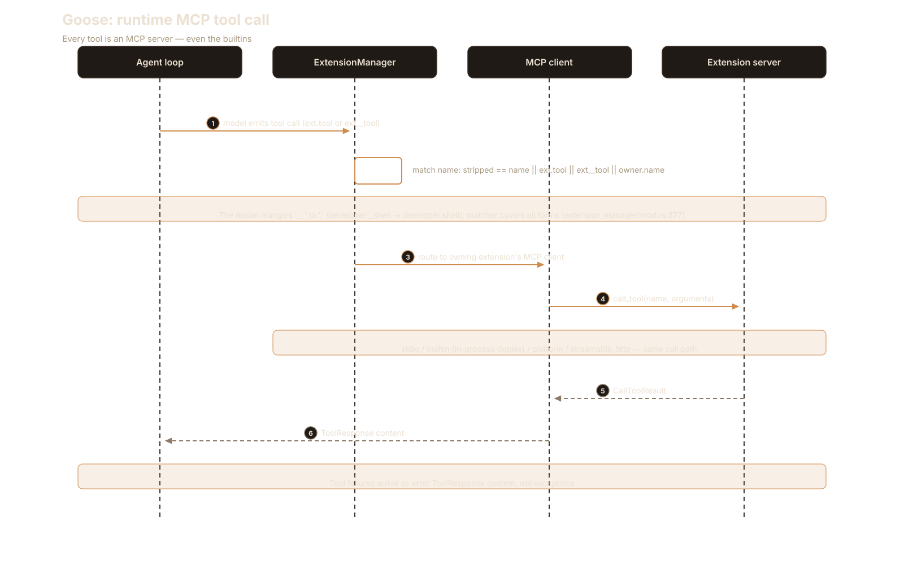
2. Plugin hooks (hooks.json)
Twelve lifecycle events, shell-command actions, JSON on stdin, exit-2
blocking. This is pi's beforeToolCall shape with plugin packaging: any
plugin directory can ship a hooks.json and intercept tool use, file
reads/edits, shell execution, session start/end, and the stop decision —
without touching Rust.42
Start here: the shipped example at
examples/plugins/hello-hooks/hooks/hooks.json, then the engine in
crates/goose/src/hooks/mod.rs.
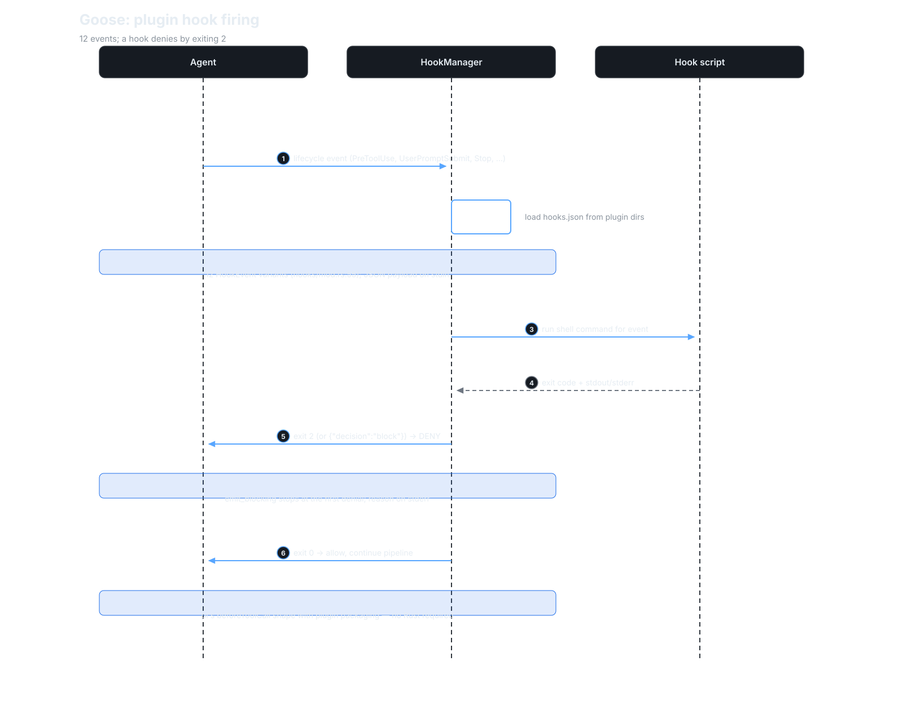
3. Recipes
Declarative YAML task files — goose's most distinctive axis, covered in its own section below.46
4. Schedules
Cron expressions over recipes: goose schedule add plus the
scheduler__manage_schedule tool, so the agent can schedule its own
future runs. Always Auto mode — a scheduled job is headless by
construction.43
Start here: crates/goose/src/scheduler/full.rs — Job::new_async_tz
for the cron fire, execute_job for the recipe-to-session handoff.
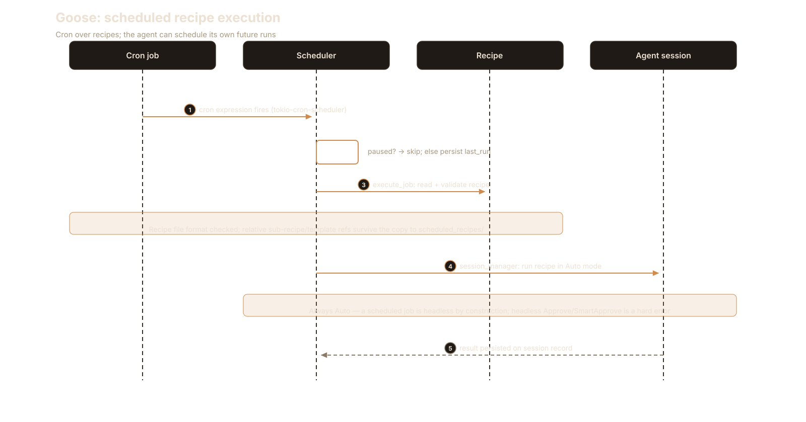
5. Sub-agents (summon)
The delegate tool with ad-hoc, source-based, and combined modes; async
background execution with load(taskId); forced Auto; 25-turn default
budget; no nesting. Recursive in-process Agent — the child is a full
agent, not a prompt template.44
Start here: create_delegate_tool in
crates/goose/src/agents/platform_extensions/summon.rs:724, then
create_subagent_session for the forced-Auto session birth.
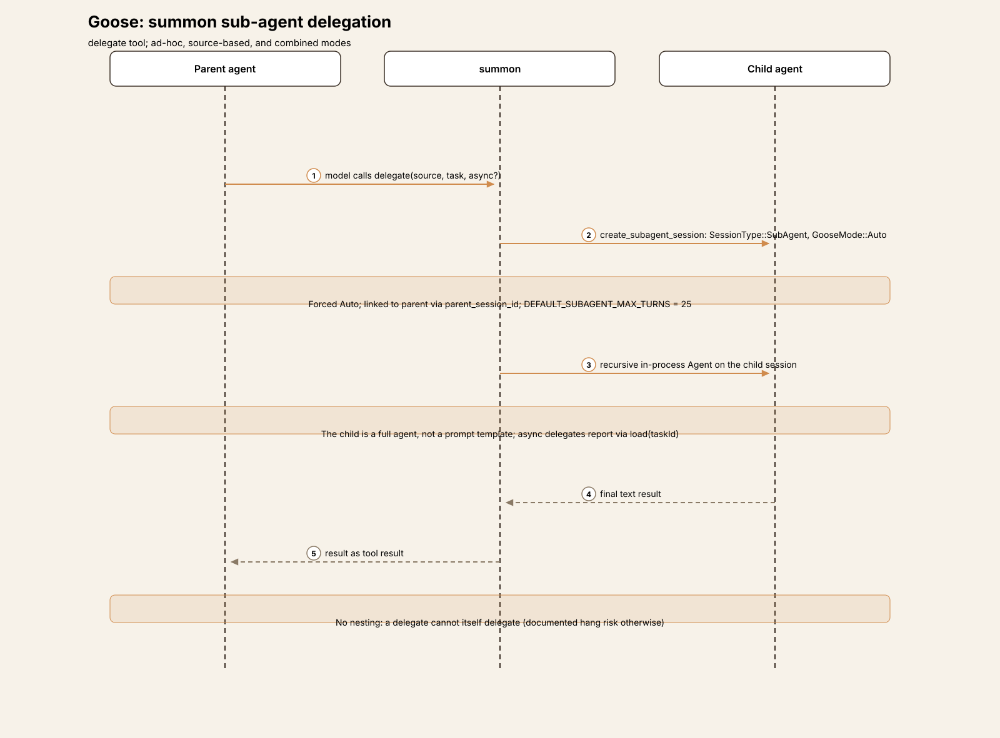
6. Skills
A skills platform extension (plus a state-machine SkillOperation),
with SKILL.md discovery — the same frontmatter-and-markdown shape pi
and Cline use.2
Start here: SkillOperation in
crates/goose/src/agents/state_machine/ops_skills.rs — the load_skill
tool is the whole runtime; skills are advertised in the system prompt
and loaded on demand, never eagerly injected.
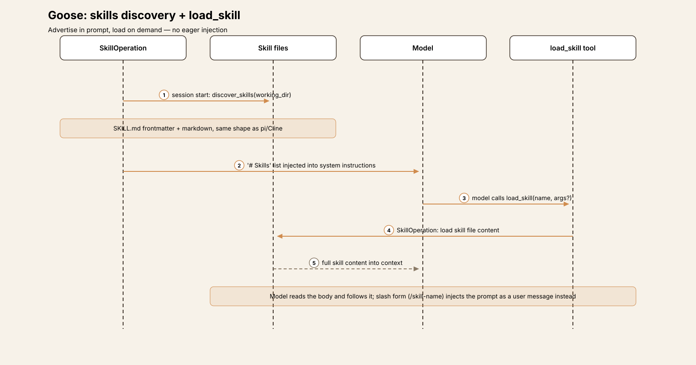
7. Custom providers
Two tiers below the 34 hand-written impls: 48 bundled declarative JSON
definitions for the long tail, and user-authored custom providers from
~/.config/goose/custom_providers/ (with command-based auth). Adding a
provider to the long tail is a JSON file, not a Rust impl.35
Start here: drop a JSON file in the custom_providers dir
(config/declarative_providers.rs:22) and copy the smallest bundled
definition as the template — no compilation involved.
8. The Provider trait
stream() is the only required method; everything else — complete(),
model recommendation, OAuth, thinking-effort plumbing, context ownership
— has defaults. Implementing a provider means implementing a stream.34
Start here: crates/goose-provider-types/src/base.rs:504, then the
smallest hand-written impl for the idiom.
9. Slash commands and modes
execute_command intercepts slash input before the loop (/mode
switches GooseMode mid-session); the state machine models it as an
explicit SlashCommandOperation, step 2 of 18 — before compaction,
before approval, before inference.1329
Start here: the intercept in Agent::reply (agent.rs:2222) —
slash input never reaches the model raw.
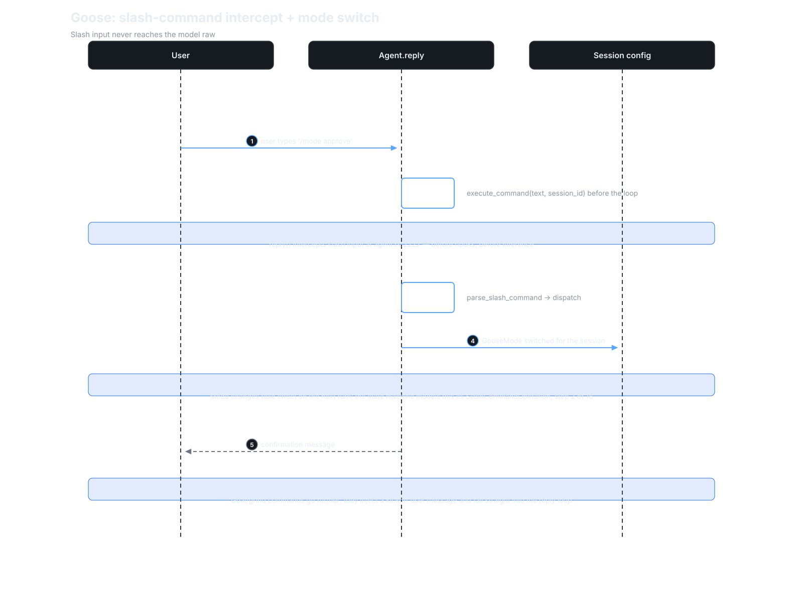
Recipes: prompts as programs
Recipes clear the new-section bar. They are not a configuration axis and not a subsystem of the loop — they are a first-class artifact type with their own schema, lifecycle, security model, and scheduling integration, and nothing in pi, aider, or Cline is like them.
A recipe is a declarative YAML (or JSON) task file. The schema requires a
semver version, a title, and a description; the options carry the
weight: instructions (injected as a system-prompt extension),
prompt (the first user message), extensions (a list of
ExtensionConfig — the recipe brings its own toolset),
settings (goose_provider, goose_model, temperature,
max_turns — the recipe picks the model), activities, author,
parameters, response.json_schema (which materializes a
final_output tool the agent must call), sub_recipes (delegation
targets for summon's delegate), and retry configs.46
Parameters are typed (string | number | boolean | date | file |
select), required | optional | user_prompt, templated with
Jinja-style {{ var }} via minijinja — and file parameters cannot have
defaults, explicitly "to prevent importing sensitive user files."46
Execution (goose run --recipe) turns instructions into the system
prompt and prompt into the first user message; recipe settings override
the provider and model; the full recipe is persisted on the session
record, so a resumed session replays the same task definition. Every
parsed recipe is auto-augmented: the analyze platform extension when
builtin developer is present, and summon when sub_recipes
exist.46
The security model is prompt-injection-aware at the file level:
check_for_security_warnings flags unicode tag characters in
instructions, prompt, and activities. Validation (for schedules)
requires prompt-or-instructions, schema-valid parameters, no
user_prompt params (they'd block headless), and a valid response
schema.46 The result: prompts become versioned, runnable, shareable,
schedulable programs — goose's most distinctive product idea, and the
axis its competitors would have to invent from scratch.
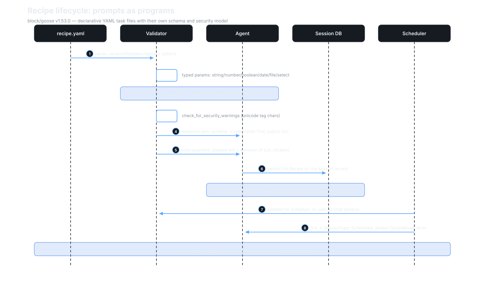
Tradeoffs
- MCP-everything vs native-wrap vs TS extensions. pi wraps each MCP
server tool in its own
ToolDefinition; Cline mints them as first-classAgentTools; goose makes everything a server — builtins included, over in-process duplex. The protocol is the extension API. The price: every tool call pays MCP serialization, and the "builtin" set is a config list you can break by editing YAML.221 - LLM-judge approvals vs user-driven policies vs git-safety. Cline asks the user constantly and makes asking cheap; aider never asks for chat files and lets git remember; pi hands you the hook. Goose asks an LLM whether the call is read-only, caches the verdict, and fails closed — adaptive where Cline is manual, and fox-guarding-henhouse in exactly the way the in-tree prompt-injection tests admit.532
- Catalog + heuristics at three scales. aider: 313-entry hand-written YAML. Cline: ~200k-line generated catalog behind one generic adapter, exact-ID resolution, no heuristics. Goose: 8,160-entry generated snapshot plus aider-style substring heuristics plus 34 hand-written provider impls. Three philosophies of "know your model," and goose picked all of them.436
- Compaction without budgeting. Goose never budgets tokens per subsystem — no allocator, no per-tool caps. It just compacts the whole conversation at 0.8 of the context limit and, optionally, summarizes old tool pairs. Simpler than a budget system; cruder too — a single huge tool output can eat the budget that compaction then has to recover.41
- Two loops, one env var. The migration tax is real and documented: every behavior change lands twice until parity is declared. The dividend is a state machine where the LLM call is dead last — every policy, hook, and compaction decision is an ordered operation that runs before inference, auditable as effects on persisted state. The legacy loop can't offer that shape; the new one can't yet be the default.310
- No undo, by omission. aider auto-commits every turn; Cline stashes every turn under private refs. Goose has neither — no git safety net of any kind. The safety story is entirely preventive (modes, inspectors, judges, hooks), never restorative. That's a coherent bet, and the starkest contrast in the series.28
Deliberate omissions
- No undo safety net. The negative grep is clean — no git revert/reset/stash as a safety mechanism anywhere. aider's auto-commits and Cline's per-turn stash checkpoints simply don't exist; if the agent breaks your tree, your backups are your own.28
- No automatic repo map. aider's PageRank-over-tree-sitter signature
subsystem is absent — but goose keeps a tree-sitter
analyzeplatform extension (directory, file, and call-graph views) that the agent invokes on demand. Map-as-tool instead of map-as-context.23 - No SSE transport. Four extension transports, and SSE isn't one — leftover configs only emit a migrate-warning. Streamable HTTP is the remote story.21
- No MCP registry client. AGENTS.md refuses new
servers.jsonentries pending the official MCP Registry, but no registry client exists in code;servers.jsonis consumed only by the docs website. The migration is prose.24 - No model-name validation. Any string is accepted as a model name; resolution is heuristics and fallbacks all the way down.36
- No command sandbox. The OSV malware check runs at extension
install time;
run_commandsexecutes unsandboxed in the user's shell, like Cline, like aider.22 - Telegram is the only gateway. The gateway abstraction has exactly
one implementation;
create_gatewaybails on anything else.45
Comparison matrix row
| # | Dimension | pi (v1.0.2) | aider (v0.86.2) | Cline (v4.1.22) | Goose (v1.53.0) |
|---|---|---|---|---|---|
| 1 | Agent loop | Event-sourced; inner + outer loops; no iteration cap | No tool-call loop; parse→apply→reflect; REPL + reflection (≤3) + retry | Host-independent SDK AgentRuntime.execute; maxIterations: undefined — bound is 5 identical tool calls |
Two loops, migration in progress: legacy agent.rs plain loop{} (default, max_turns=1000) vs opt-in effect-sourced state machine (GOOSE_STATE_MACHINE=1), LLM call dead last 36710 |
| 2 | Tool system | 4 built-ins + registry; TypeBox validation; sequential/parallel | None — model emits SEARCH/REPLACE blocks | 9 built-ins + MCP natives + team tools; sequential default, adjacent-parallel batching | Entirely MCP-shaped: every tool is an MCP server (builtins = in-process tokio duplex); ext__tool namespacing; no non-MCP path 22123 |
| 3 | Model providers | ~35 behind one StreamFn |
litellm; 313-entry YAML + substring heuristics | 228 providers, one generic Vercel AI SDK adapter; exact-ID resolution | Single Provider trait (stream() required); 34 static + 48 declarative JSON + custom; 8,160-entry models.dev snapshot (zstd-bundled, ETag hot-swap) + substring heuristics; no name validation 343536 |
| 4 | Prompt construction | Structured sections, diffed per turn | Fixed wire order, synthetic user/assistant pairs, cache breakpoints | Template + placeholder replacement; MessageBuilder normalization |
PromptManager from extension info + directory hints + goose mode; toolshim/native split per model; moim agent-only turn-context message 14 |
| 5 | Memory/session | JSONL sessions; compaction | In-memory cur/done; background summarization; markdown log; git auto-commit | SQLite + file-backend; versioned whole-file JSON envelopes; manual /compact |
SQLite sessions.db + JSON blobs; full Recipe persisted on session record; explicit cross-session recall (chatrecall + SQL FTS); user_visible/agent_visible flags 40 |
| 6 | Reasoning/planning | Thinking forwarded; no planner/sub-agents | Architect = sequential delegation with user gate | plan/act modes (differ by one tool); sub-agents + teams | GooseMode (Auto/Approve/SmartApprove/Chat); summon sub-agents (forced Auto, 25 turns, no nesting); recipes as declarative task programs; in-process cron schedules (always Auto) 29444643 |
| 7 | Extensibility | TS extensions, hooks, MCP, skills | 42 closed commands; no plugin API/MCP/skills | AgentRuntimePlugin, 7-callback hooks, file hooks, skills, MCP, sub-agents |
Broadest so far: MCP extension configs (4 transports), 12-event plugin hooks, recipes, schedules, sub-agents, skills, custom providers, the Provider trait 214246433534 |
| 8 | Interfaces | TUI / print / RPC / SDK on one event stream | prompt_toolkit CLI + streamlit GUI | VS Code webview over proto-bus gRPC (22 svcs/224 RPCs) + CLI host + npm SDK re-export | Rust CLI REPL + Electron desktop + ACP bridge + Telegram gateway; loop emits AgentEvents; uniffi Python/Kotlin bindings via goose-sdk 204541 |
| 9 | Failure handling | Auto-retry, truncation guards, abort; no cap | Exp-backoff (60s); malformed edits reflected (≤3) | Provider retry 3×; output-limit recovery 3×; loop detection 3×/5× (reactive); mistake tracker 6; no host iteration cap | Three-layer retry (provider pre-first-item ≤3, recipe RetryManager, micro-retries); max_turns=1000; repetition guard inert (registered None) — the bound is turns, not loops 79 |
| 10 | Security model | Project trust + extension hooks; no approval UX | Boundary prompts; git auto-commit + /undo; no sandbox |
Finest-grained: per-tool policies + webview UI + diff previews; commands always prompt; no sandbox; per-turn stash checkpoints | Modes × permission.yaml × 5-inspector chain (security can only escalate); LLM judge for SmartApprove (UNTRUSTED-labeled, fail-closed); Always-Allow withheld on security warning; strict headless; no undo 293031323328 |
Endnotes
All notes are VERIFIED against v1.53.0
(76da81cb964b21cd096db739302329b40c2998b8) unless marked DOCS.
GH = https://github.com/block/goose/blob/76da81cb964b21cd096db739302329b40c2998b8/.
-
Tag
v1.53.0, SHA76da81cb964b21cd096db739302329b40c2998b8, committed 2026-09-30 14:19:01 -0400; Apache-2.0 (LICENSE); Rust cargo workspace (members = ["crates/*"]). Non-test.rsin*/src:goose339 files / 176,482 LOC,goose-cli51 / 28,625,goose-provider-types36 / 30,822,goose-providers26 / 15,731,goose-local-inference20 / 10,347,goose-mcp11 / 6,084,goose-agent6 / 1,557,goose-context-management7 / 1,156,goose-sdk4 / 2,834,goose-sdk-types5 / 3,261,goose-roaming11 / 2,197,goose-download-manager1 / 690,goose-acp-macros1 / 319. Entry:crates/goose-cli/src/main.rs→goose_cli::cli::cli(); the agent at GH…/crates/goose/src/agents/agent.rs. Claim under test fromREADME.md: "your native open source AI agent — desktop app, CLI, and API — for code, workflows, and everything in between." Scope: the CLI agent; the Electron desktop (ui/desktop/) is out of scope except as the cron-loop host;goose-roamingwas mapped but not deep-dived. ↩↩↩ -
"Builtin" means in-process MCP: every tool the agent sees arrives through the MCP client layer; builtins connect over in-process tokio duplex rather than subprocess stdio (see 22). There is no non-MCP tool path — contrast pi's 4 native built-ins plus TS extension API. ↩↩↩↩↩
-
Agent::reply()at GH…/crates/goose/src/agents/agent.rs#L2079 takesuse_state_machine: bool; the CLI passesgoose::agents::state_machine::enabled()(crates/goose-cli/src/session/mod.rs:1456), which is false unlessGOOSE_STATE_MACHINE∈ {1,true,TRUE,yes} at GH…/crates/goose/src/agents/state_machine/mod.rs#L73-L77. The repo's ownAGENTS.md:41-43: "We are replacing the legacy agent loop incrates/goose/src/agents/agent.rswith the state machine incrates/goose/src/agents/state_machine/. … Until the migration is complete, changes to agent-loop behavior must be implemented and tested in both paths." ↩↩↩↩ -
aider's model-compat layer: a 313-entry
model-settings.ymlplusapply_generic_model_settingssubstring heuristics (Agent Harness Anatomy #2). Goose's analog: an 8,160-entry models.dev snapshot zstd-bundled at build time plusinfer_provider_from_modelsubstring rules — see 36. ↩↩↩ -
SmartApprove's read-only classifier: the model judges its own pending tool calls, labeled
UNTRUSTED TOOL REQUEST DATA, failing closed — see 32. ↩↩ -
Agent::reply→reply_implat GH…/crates/goose/src/agents/agent.rs#L2109 →reply_internalat L2455, which runs a plainloop {}insideasync_stream::try_stream!at L2625.agent.rsis 6,382 lines at this SHA. ↩↩↩ -
DEFAULT_MAX_TURNS: u32 = 1000at GH…/crates/goose/src/agents/agent.rs#L86;turns_taken > max_turnsyieldsMAX_TURNS_MESSAGEand breaks. Other termination arms: cancellation (three check points), provider refusal, credits/auth/network errors, ≤2 recovery compactions, ≤3 empty-turn retries (MAX_EMPTY_TURN_RETRIESat L89), stop-hook denial cap 8 (DEFAULT_STOP_HOOK_BLOCK_CAPat L87), recipe retry exhaustion. Negative finding:grep -rln "max_iterations" crates/goose/src crates/goose-cli/src→ no matches at the pinned SHA — the bound ismax_turns, full stop. ↩↩↩↩↩ -
inspect_toolssplits requests into approved/needs_approval/denied at GH…/crates/goose/src/agents/agent.rs#L2906-L2921;handle_approval_tool_requestsat GH…/crates/goose/src/agents/tool_execution.rs#L149 registers a oneshot in theToolConfirmationRouter, yieldsActionRequired, and awaits;submit_tool_confirmationat GH…/crates/goose/src/agents/agent.rs#L1518 delivers the verdict.handle_confirmationat L1616 has zero non-test callers — dead, superseded. Providers can route confirmation natively viaPermissionRouting::ActionRequiredat GH…/crates/goose-provider-types/src/base.rs#L341. ↩↩↩ -
Retry, three layers. (a) Provider pre-first-item: ≤3, exp backoff 1s→30s, transient-only; auth gets one credential refresh; mid-stream errors are not retried — at GH…/crates/goose/src/agents/reply_parts.rs#L422-L458. (b) Recipe
RetryManager: shell success checks,on_failurecommand, conversation reset to theinitial_messagessnapshot — at GH…/crates/goose/src/recipe/retry.rs#L92-L142. (c) Micro-retries: empty-turn ×3, compaction ×2, stop-hook ×8. Tool failures arrive as errorToolResponsecontent, not exceptions. TheRepetitionInspectoris inert in the legacy path: registered withNoneat GH…/crates/goose/src/agents/agent.rs#L794, socheck_tool_callalways returns true at GH…/crates/goose/src/tool_monitor.rs#L59-L63, andinspectruns on throwaway clones at L108-L116. ↩↩↩↩ -
The state machine is effect-sourced: steps produce
GooseEffects (crates/goose/src/agents/state_machine/effects.rs) applied to the persisted session bySessionManager(state_machine/session.rs); the machine re-loads the session each iteration — "an ordered, re-entrant pipeline over persisted conversation state" at GH…/crates/goose/src/agents/state_machine/mod.rs#L1-L5. The ~20 operations are wired inAgent::create_state_machine; the step order at GH…/crates/goose/src/agents/agent.rs#L1687-L1766 putsInferencelast, gatheringinference_tools,prompt_parts, andmoim_partsfrom every operation before the model call. ↩↩↩↩ -
Parity-burden seams. The legacy loop imports the new path's
MAX_TURNS_MESSAGEat GH…/crates/goose/src/agents/agent.rs#L40 (←state_machine/ops_maxturns.rs:14).Permission::Cancelis normalized toDenyOnceonly in the state-machine path at GH…/crates/goose/src/agents/agent.rs#L1531-L1532. Legacy approval blocks on a per-request oneshot router at GH…/crates/goose/src/agents/agent.rs#L2902-L2945; the state machine patchesgoose.executablemetadata effects (TOOL_EXECUTABLE_KEY) at GH…/crates/goose/src/agents/state_machine/ops_tool_approval.rs#L24 and L285-L293. ↩ -
The steer queue can veto the loop's exit at GH…/crates/goose/src/agents/agent.rs#L3549-L3551, but steers cannot inject before the first provider round-trip at L3303. ↩
-
Trace ①: message ID assigned at GH…/crates/goose/src/agents/agent.rs#L2116;
use_state_machine=falseskips the new path at L2166;SessionStart/UserPromptSubmithooks fire at L2210-L2229;execute_commandreturnsOk(None)— not a slash command — at L2231; the message is persisted viasession_manager.add_messageat L2346-L2352. ↩↩ -
Trace ②:
prepare_reply_contextat GH…/crates/goose/src/agents/agent.rs#L845 →prepare_tools_and_promptat GH…/crates/goose/src/agents/reply_parts.rs#L198: tools vialist_tools, unique-name enforcement, system prompt fromPromptManager(extension info + directory hints + goose mode) at L219-L233, toolshim/native split permodel_config.toolshimat L236-L244. The moim agent-only turn-context message is persisted before the loop at GH…/crates/goose/src/agents/agent.rs#L2602-L2622; skipped when the context limit is under 32k at GH…/crates/goose/src/agents/moim.rs#L119-L121. ↩↩ -
Trace ③:
stream_response_from_providerat GH…/crates/goose/src/agents/reply_parts.rs#L342 →provider.stream(&model_config, system_prompt, messages, &tools)at L392-L398; pre-first-item transient retries (≤3) at 9. Text chunks yieldAgentEvent::Messagelive at GH…/crates/goose/src/agents/agent.rs#L2828. ↩ -
Trace ④:
categorize_tool_requestsat GH…/crates/goose/src/agents/reply_parts.rs#L587;recover_mangled_tool_nameat L587-L603; arguments coerced to the advertised JSON schema; tool-call IDs deduped; calls to unadvertised tools becomeinvalid_requesterrors — invalid tool calls are data, not exceptions. ↩ -
Trace ⑤:
handle_approved_and_denied_toolsat GH…/crates/goose/src/agents/agent.rs#L900 →dispatch_tool_callat L1067:PreToolUsehooks fire at L1094-L1110, thenextension_manager.dispatch_tool_callruns it at L1168-L1174, wrapped bywith_post_tool_hook(large-response spill +PostToolUsehooks) at L688-L769. The approval path:handle_approval_tool_requests(8). Streams drain concurrently at GH…/crates/goose/src/agents/agent.rs#L2969-L3030. ↩ -
Trace ⑥: request/response pairs into
messages_to_addat GH…/crates/goose/src/agents/agent.rs#L3067-L3136, persisted per message at L3501-L3505 and appended to the conversation at L3506. Unparseable calls become a well-formed"unparseable_tool_call"placeholder at L3097-L3109. Large text outputs spill to an owner-only temp file (200,000-char default) at GH…/crates/goose/src/agents/large_response_handler.rs#L7-L13. ↩ -
Trace ⑦:
exit_chat = trueat GH…/crates/goose/src/agents/agent.rs#L3444; the stop hook allows →break. Otherwise the loop continues untilturns_taken > 1000, cancellation, an error arm, or the stop-hook cap (see 7). ↩ -
Trace ⑧: all output is
AgentEvents consumed by the CLI, the desktop, and the ACP frontends. Final summary text accumulates inlast_assistant_textat GH…/crates/goose/src/agents/agent.rs#L3598-L3606. ↩↩ -
ExtensionConfigat GH…/crates/goose/src/agents/extension.rs#L156: exactly four variants —stdio,builtin,platform,streamable_http. Negative finding:grep -rn '"sse"\|Sse' crates/goose/src/agents/ crates/goose/src/config/extensions.rs→ only the migrate-warning and an ACP schema-generator bin — no SSE transport at the pinned SHA. Config lives underextensions:in~/.config/goose/config.yamlat GH…/crates/goose/src/config/extensions.rs#L13 (GOOSE_PATH_ROOToverrides at GH…/crates/goose/src/config/paths.rs#L33). ↩↩↩↩↩↩ -
resolve_extensions_for_new_sessionat GH…/crates/goose/src/config/extensions.rs#L303 →Agent::add_extensions_bulk→ExtensionManager::add_extensionat GH…/crates/goose/src/agents/extension_manager/mod.rs#L470 (no-op on unchanged config), resolving secrets/envs against a 31-key env denylist, then connecting per type: stdio spawns a subprocess with an OSV malware check on npx/uvx at GH…/crates/goose/src/extension_malware_check.rs#L44; builtin servers connect over in-process tokio duplex at GH…/crates/goose/src/agents/extension_manager/builtin.rs#L10; platform extensions run in-process via the client factory; remote ones get an OAuth step-up wrapper with proactive token refresh at GH…/crates/goose/src/agents/extension_manager/streamable_http.rs#L343 and L657. ↩↩↩↩ -
Namespacing at GH…/crates/goose/src/agents/extension_manager/mod.rs#L244: tools prefixed
<ext>__<tool>, owner-tagged in_meta.goose_extension, cached with version invalidation ontools/list_changed, dispatched byresolve_tool_with_constraintsat L1140 with mangled-name recovery at L262. Bundled set at GH…/crates/goose-mcp/src/lib.rs#L80: autovisualiser (8render_*tools), computercontroller (xlsx/docx/pdf + macOS-onlycomputer_control), memory (4 tools), tutorial (1 tool). Platform extensions default-ON: developer, summon, skills, analyze (a tree-sitter directory/file/call-graph tool the agent invokes on demand — map-as-tool, not map-as-context), tom, extensionmanager, apps, scheduler; default-OFF: todo, chatrecall, summarize, code_execution, orchestrator (scheduler and orchestrator hidden). ↩↩↩↩ -
servers.jsonhas no runtime consumer:grep -rn "servers.json\|fetchMCPServers" crates/ ui/desktop/src documentation/→ onlydocumentation/src/(the docs website). Negative finding:grep -rni "registry" crates/goose/src crates/goose-cli/src crates/goose-mcp/src→ onlyActiveRunRegistry, provider registries,BUILTIN_REGISTRY, andregister_*functions — nothing referencing the official MCP Registry. The repo's AGENTS.md refuses newservers.jsonentries pending that migration.search_available_extensionsis config-local only at GH…/crates/goose/src/agents/ext_manager.rs#L517-L563. ↩↩ -
ToolInfo.permissionis dead code: defined at GH…/crates/goose/src/agents/extension.rs#L569, zero other references repo-wide.manage_extensionsalways requires approval and is blocked for subagents; theavailable_toolsallowlist is enforced at list and dispatch time; removing an extension prunes its per-tool permissions at GH…/crates/goose/src/config/permission.rs#L233-L251. ↩ -
rmcp 3.4.1 is the protocol SDK (workspace
Cargo.toml:23);goose-mcpadds the four bundled servers, the spawn-function registry,mcp_server_runner, and subprocess/PATH plumbing. The goose crate'sGooseClient(roots, elicitation→user with 300s timeout, session-context_metainjection, timeouts/cancellation) at GH…/crates/goose/src/agents/mcp_client.rs#L74-L924. ↩ -
Docs-vs-code, all VERIFIED.
documentation/docs/goose-architecture/extensions-design.mddocuments anExtensiontrait —grep -rn "trait Extension" crates/goose/src crates/goose-mcp/src→ zero hits. Docs saygoose mcp {name}adds a builtin to a session; it runs the server standalone on stdio. Docs name anenable_extensiontool; the real tool ismanage_extensions. "Smart Extension Recommendation" is a local config listing. ↩ -
No undo safety net. Negative finding:
grepovercrates/goose/srcforgit.*(revert|reset|stash)as a safety mechanism → nothing at the pinned SHA. aider auto-commits every turn and Cline stashes every turn under private refs; goose has neither — safety is entirely preventive (modes, inspectors, judges, hooks), never restorative. ↩↩↩↩ -
GooseModeat GH…/crates/goose-provider-types/src/goose_mode.rs#L22-L36:Auto(default; "Automatically approve tool calls"),Approve("Ask before every tool call"),SmartApprove("Ask only for sensitive tool calls"),Chat("Chat only, no tool calls"). Config keyGOOSE_MODEat GH…/crates/goose/src/config/base.rs#L1263;/modeswitches mid-session at GH…/crates/goose-cli/src/session/input.rs#L229-L295. ↩↩↩↩ -
PermissionLevelat GH…/crates/goose/src/config/permission.rs#L16-L23:AlwaysAllow/AskBefore/NeverAllow, persisted in<config_dir>/permission.yamlunderuser:andsmart_approve:namespaces; lookup precedence NeverAllow > AlwaysAllow > AskBefore at L61-L62 and L137-L160, keyed by full tool name. ↩↩ -
Inspectors registered in
Agent::newin order at GH…/crates/goose/src/agents/agent.rs#L777-L794: Security, Egress, Adversary (adversary.md, model-reviewed), Permission (decision table at GH…/crates/goose/src/permission/permission_inspector.rs#L144), Repetition. Each emitsInspectionAction ∈ {Allow, Deny, RequireApproval}at GH…/crates/goose/src/tool_inspection.rs#L22-L32. Security can only escalate, never relax: a Deny removes the request from approved and needs-approval; an Allow is explicitly "don't override other inspectors' decisions — if it's already denied or needs approval, leave it that way" at GH…/crates/goose/src/tool_inspection.rs#L214-L258. ↩↩ -
SmartApprove's LLM judge:
detect_read_only_requestsat GH…/crates/goose/src/permission/permission_judge.rs#L145-L184; requests labeled"UNTRUSTED TOOL REQUEST DATA (JSON):\n{requests}"at L113, judged through a syntheticplatform__tool_by_tool_permissiontool. Non-read-only verdicts are cached name-wide asAskBeforein thesmart_approve:namespace; judge failure fails closed (everything prompts). The fox-guarding-henhouse shape is acknowledged with prompt-injection tests in-tree at GH…/crates/goose/src/permission/permission_judge.rs#L95-L130. ↩↩↩↩ -
prompt_tool_confirmationat GH…/crates/goose-cli/src/session/mod.rs#L2165-L2214 offers Allow / Always Allow / Deny / Cancel — but "Always Allow" is withheld when a security inspector attached a warning at L2197-L2203.AlwaysDenyis never offered in the CLI; its only producer is the Telegram gateway's "deny always" reply at GH…/crates/goose/src/gateway/handler.rs#L216-L227. Headless is strict:Autoauto-allows (with a warn log);Approve/SmartApprovein non-interactive mode is a hard error — "This is an invalid configuration" — at GH…/crates/goose-cli/src/session/mod.rs#L1367-L1392. ↩↩↩ -
The
Providertrait at GH…/crates/goose-provider-types/src/base.rs#L504:stream()is the only required behavioral method;complete()defaults to stream-plus-collect_stream, overridden only at GH…/crates/goose-providers/src/githubcopilot.rs#L621. Negative finding:grep "pub trait Provider\b" crates/goose-provider-types/src→ exactly one hit — a single trait. ↩↩↩↩ -
34 static registrations at GH…/crates/goose-providers/src/providers/init.rs#L54-L158 (incl. feature-gated
aws_bedrock,sagemaker_tgi,local) + 48 bundled declarative JSON definitions + user custom providers from~/.config/goose/custom_providers/. Four tiers (Preferred/Builtin/Declarative/Custom); selection chain (--providerflag → saved session → recipe →GOOSE_PROVIDERenv >active_providerconfig > legacy param) at GH…/crates/goose/src/session/builder.rs#L283-L446. ↩↩↩↩ -
The model catalog: an 8,160-entry models.dev snapshot zstd-bundled at build time at GH…/crates/goose-provider-types/src/canonical/models_dev.rs#L36-L49 (
build.rs:1-11), with a background ETag refresh that hot-swaps the registry at runtime at GH…/crates/goose/src/model_catalog.rs#L4-L20. Name resolution at GH…/crates/goose-provider-types/src/canonical/name_builder.rs#L24-L258: version-suffix stripping, provider renames, Claude word-order swapping,infer_provider_from_modelsubstring rules; hardcodedinferred_thinking_modefor Claude 4.5–5.x plus name-regex matchers (is_openai_responses_model,is_xai_reasoning_model, glm-5.3 / kimi-k3 segment matchers). Negative findings: no model-name validation anywhere on theGOOSE_MODELpath (grep -ri "unknown model|invalid model|not a known model|unsupported model" crates/goose/src crates/goose-cli/src→ only dictation/whisper and ACP param errors); no aider-style hand-written YAML (*.yamlmodel files undercrates/goose-provider-types/src/canonical/andcrates/goose-providers/src/→ none). ↩↩↩↩↩ -
Auth: env-var-first-then-keyring, no mixing, at GH…/crates/goose/src/config/base.rs#L912-L941;
AuthMethod::{NoAuth, BearerToken, ApiKey, Custom};configure_oauthin six providers (chatgpt_codex, gemini_oauth, githubcopilot, kimicode, muse_code, xai_oauth) with a shared RFC 8628 device-flow helper; command-based auth for custom providers. Naming seam:crates/goose/src/oauth/is MCP-server OAuth, not provider auth — provider OAuth lives inproviders/oauth*.rs. ↩ -
goose-local-inference: llama.cpp/GGUF + MLX on-device inference behind provider name"local"— feature-gated, never default, no auto-activation — with its own tool-emulation (toolshim) and chat templates. ↩ -
MessageContentBlockcarries Thinking/RedactedThinking blocks (signature-aware stream coalescing);ToolRequestwrapsrmcp::model::CallToolRequestParams, so invalid tool calls are data, not errors; harness annotations ride intool_meta._meta; approval and elicitation are modeled as conversation blocks at GH…/crates/goose-provider-types/src/conversation/message.rs#L133-L330. Cost is estimated, never authoritative unless provider-reported, at GH…/crates/goose/src/usage_estimator.rs#L11-L19. ↩ -
SQLite at
<data_dir>/sessions/sessions.db— GH…/crates/goose/src/session/session_manager.rs#L29-L30 and L714-L720; messages as JSON blobs. The session record at L63-L99 carries the id, working dir, LLM-generated name (session_naming.rs),SessionType, timestamps, extension data, usage/accumulated cost, schedule id, the fullRecipestruct, user recipe values, the conversation, the goose mode, the parent session id, and the provider/model.SessionTypeat L48-L57:User | Scheduled | SubAgent | Hidden | Terminal | Gateway | Acp— resume lists onlyUser. Resume/fork at GH…/crates/goose-cli/src/cli.rs#L404-L470 and L933-L968. Cross-session recall is explicit: thechatrecallplatform tool (loads another session's first/last messages) pluschat_history_search.rs(SQL full-text search) — never automatic. Every message carriesuser_visible/agent_visibleflags, which compaction and subagent summaries exploit. ↩↩ -
No token-budget allocator. Negative finding:
grep -i "budget|quota|allocat" crates/goose/src/context_mgmt/ crates/goose-context-management/src/→ no matches. Auto-compaction triggers whensession.usage.total_tokens / context_limit > 0.8:DEFAULT_COMPACTION_THRESHOLD: f64 = 0.8at GH…/crates/goose-context-management/src/lib.rs#L32; the check at GH…/crates/goose/src/context_mgmt/mod.rs#L224-L269 preferssession.usage.total_tokens("session metadata") and falls back to a token-counter estimate ("estimated"); overridable viaGOOSE_AUTO_COMPACT_THRESHOLD(≤0 or ≥1 disables); providers withmanages_own_contextskip it. Checked before each reply (legacy at GH…/crates/goose/src/agents/agent.rs#L2365-L2368, state machine atops_compaction.rs:197); manual via/compactat GH…/crates/goose-cli/src/session/mod.rs#L1254-L1264.compact_messagesat GH…/crates/goose/src/context_mgmt/mod.rs#L70-L222: one-shot model summarization (goose-context-management::summarize), all original messages marked agent-invisible (kept user-visible for the UI), one agent-only summary appended plus a continuation nudge, latest user text preserved, persisted viareplace_conversation+AgentEvent::HistoryReplaced. Opt-in tool-pair summarization (GOOSE_TOOL_PAIR_SUMMARIZATION, default false): oldest 10 tool request/response pairs pastclamp(3 * (limit*threshold) / 20000, 10, 500)at GH…/crates/goose/src/context_mgmt/mod.rs#L366-L374 replaced by one agent-only summary each. Thegoose-context-managementcrate is a language-agnostic compaction library — cross-language (Python/Kotlin) access is exposed throughgoose-sdk's uniffi bindings (code comment atcrates/goose-context-management/src/lib.rs:9-12;goose-sdkships the bindgen binary andbindings.rs). ↩↩↩ -
Twelve hook events at GH…/crates/goose/src/hooks/mod.rs#L55-L68:
PreToolUse,PreToolUseResult,PostToolUse,PostToolUseFailure,SessionStart,SessionEnd,UserPromptSubmit,BeforeReadFile,AfterFileEdit,BeforeShellExecution,AfterShellExecution,Stop. Each enabled plugin contributeshooks/hooks.jsonat L425-L472; onlycommandactions are supported; the hook runs as a shell command with JSON-serializedHookContexton stdin and a 30-second default timeout (DEFAULT_HOOK_TIMEOUT_SECSat L44). Blocking: exit code 2 or{"decision":"block"}; first denial wins (emit_blockingat L703-L706).PreToolUseruns before dispatch in both loops — at GH…/crates/goose/src/agents/agent.rs#L1103 and GH…/crates/goose/src/agents/state_machine/ops_toolcalling.rs#L128. Hook errors never crash the host at GH…/crates/goose/src/hooks/mod.rs#L517-L520. Event-name casing verified against the shipped example atexamples/plugins/hello-hooks/hooks/hooks.json— PascalCase (SessionStart,UserPromptSubmit,PreToolUse), matchingHookEvent::name()exactly. Aspirational seam: the config module doc comment advertises "hot reloading of configuration changes" (crates/goose/src/config/base.rs:80), but there is no file watcher and no reload function anywhere incrates/goose/src/config/— the claim exists only in the comment. ↩↩↩↩ -
The
Schedulerat GH…/crates/goose/src/scheduler/full.rs (behindfeature = "scheduler") wrapstokio-cron-scheduler; jobs in<data_dir>/schedule.json; recipe files copied (validated, ≤1 MiB, mode0o600) toscheduled_recipes/<job-id>.<ext>at GH…/crates/goose/src/scheduler/common.rs#L13, L96-L106, and GH…/crates/goose/src/scheduler/full.rs#L290-L315. Cron dialect is 6-field (seconds first), local timezone, 5-field auto-prefixed at GH…/crates/goose/src/scheduler/full.rs#L138-L165. On fire,execute_jobat L830 builds the recipe from the stored copy into aSessionType::Scheduledsession running always inGooseMode::Auto— scheduled jobs never prompt — at L868-L885. Validation at GH…/crates/goose/src/recipe/validate_recipe.rs#L379-L414 requires prompt-or-instructions, schema-valid parameters (nouser_promptparams — they'd block headless), and a valid response JSON schema. Agent surface: thescheduler__manage_scheduleplatform tool at GH…/crates/goose/src/agents/schedule_tool.rs#L76-L116; CLI:goose schedule add|list|remove|sessions|run-now|cron-helpat GH…/crates/goose-cli/src/cli.rs#L628-L660. The cron loop lives in the long-lived desktop/ACP process at GH…/crates/goose/src/acp/server_factory.rs#L74; a CLIgoose scheduleinvocation builds a throwawayScheduler. Seam: CLI help blesses@hourlyshorthands at GH…/crates/goose-cli/src/cli.rs#L642 thatcreate_cron_taskrejects withCronParseError. ↩↩↩↩ -
The
delegatetool in thesummonplatform extension at GH…/crates/goose/src/agents/platform_extensions/summon.rs#L777-L794 (ad-hoc, source-based, and combined modes;async: trueruns in the background with aload(taskId)handle). Execution is a full in-processAgentrunningagent.reply(...)recursively at GH…/crates/goose/src/agents/subagent_handler.rs#L46-L62, with its ownSessionType::SubAgentsession andparent_session_idat GH…/crates/goose/src/agents/platform_extensions/summon.rs#L610-L631. No nested delegation at GH…/crates/goose/src/agents/platform_extensions/summon.rs#L2155-L2168. ForcedGooseMode::Autoat GH…/crates/goose/src/agents/platform_extensions/summon.rs#L1393-L1400: "Subagents must use Auto until get_agent_messages forwards ActionRequired messages to the parent. Until then, any mode that requires approval will hang." Config:TaskConfigat GH…/crates/goose/src/agents/subagent_task_config.rs#L13-L33;max_turnsdefault 25 (GOOSE_SUBAGENT_MAX_TURNS); system prompt fromprompts/subagent_system.md; result extraction from thefinal_outputtool output when the recipe has a response schema, else last/all text, at GH…/crates/goose/src/agents/subagent_handler.rs#L64-L104 and L264-L275. ↩↩↩ -
The gateway at GH…/crates/goose/src/gateway/mod.rs#L14-L100: only Telegram exists at this SHA —
create_gatewaybails on anything else at L95-L100.GatewayHandlerat GH…/crates/goose/src/gateway/handler.rs#L52: per-userSessionType::Gatewaysessions; approvals answered by chat text (approve/approve always/deny/deny always→Permissionvariants) at L216-L227 — the only producer ofAlwaysDenyin the codebase. The ACP bridge atcrates/goose/src/acp/hosts an ACP server (the desktop app drives the agent through it), with live callers ofsubmit_tool_confirmationat GH…/crates/goose/src/acp/server.rs#L1611 and L421. ↩↩↩↩ -
The
Recipeschema at GH…/crates/goose/src/recipe/mod.rs#L43-L87: required semverversion,title,description; optionalinstructions(system-prompt extension),prompt(first user message),extensions(list ofExtensionConfig),settings(goose_provider,goose_model,temperature,max_turns),activities,author,parameters,response.json_schema(materializes afinal_outputtool),sub_recipes,retry. Parameters are typed (string | number | boolean | date | file | select),required | optional | user_prompt, templated with Jinja-style{{ var }}via minijinja;fileparameters cannot have defaults — "to prevent importing sensitive user files" — at L167-L170. Execution (goose run --recipe) at GH…/crates/goose-cli/src/recipes/extract_from_cli.rs#L11-L61; the full recipe is persisted on the session record at GH…/crates/goose/src/session/builder.rs#L563-L688 and L808-L815. Auto-augmentation at GH…/crates/goose/src/recipe/mod.rs#L231-L271 and L338-L339 (theanalyzeplatform extension when builtindeveloperis present;summonwhensub_recipesexist). Security:check_for_security_warningsflags unicode tag characters (prompt-injection markers) in instructions/prompt/activities at GH…/crates/goose/src/recipe/mod.rs#L274-L292. ↩↩↩↩↩↩↩